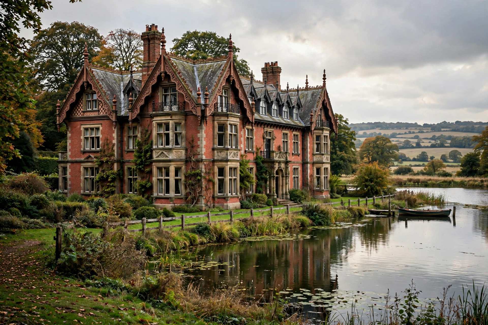

From Wikipedia, the free encyclopedia
| Bletchley Park | |
|---|---|
 The Bletchley Park mansion | |
| Location | Bletchley, Milton Keynes, Buckinghamshire, England |
| Role in WWII | Government Code and Cypher School headquarters |
| Active | 1939–1945 (codebreaking) |
| Key people | Alan Turing, Gordon Welchman, Dilly Knox, Tommy Flowers |
| Now | Museum and heritage site |
Bletchley Park is an English country estate near Milton Keynes that became the principal centre of Allied codebreaking during the Second World War. As the wartime home of the Government Code and Cypher School (GC&CS), it housed the teams that deciphered German Enigma and Lorenz cipher traffic — intelligence codenamed Ultra — and where the pioneering electromechanical Bombe and the electronic Colossus, the world's first programmable electronic computer, were developed.
The estate was purchased in 1938 as a wartime evacuation site for GC&CS. Staff grew from a few hundred to around 9,000 by 1945, roughly three-quarters of them women, working in the mansion and a growing complex of wooden huts. Hut 8, led by Alan Turing, attacked naval Enigma; Hut 6 handled army and air force keys. In Hut 11, Bombes designed by Turing and Gordon Welchman mechanised the search for daily Enigma settings. At nearby stations, Tommy Flowers's Colossus computers broke the Lorenz "Tunny" cipher used by the German high command. Ultra intelligence influenced the Battle of the Atlantic, the North Africa campaign, and the planning of D-Day; historians credit it with shortening the war.
The work remained classified until the 1970s, and many veterans never spoke of it. The site was saved from demolition in the 1990s and is now a museum run by the Bletchley Park Trust; the adjacent National Museum of Computing houses a rebuilt Colossus and Bombe.